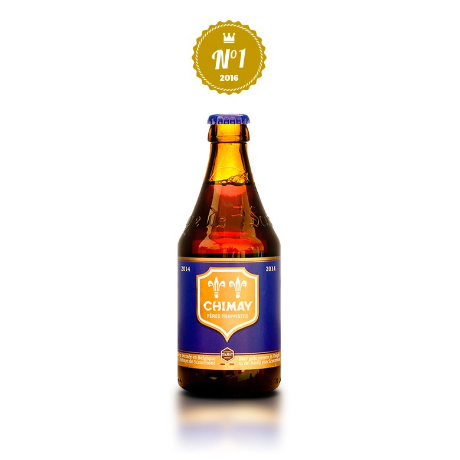
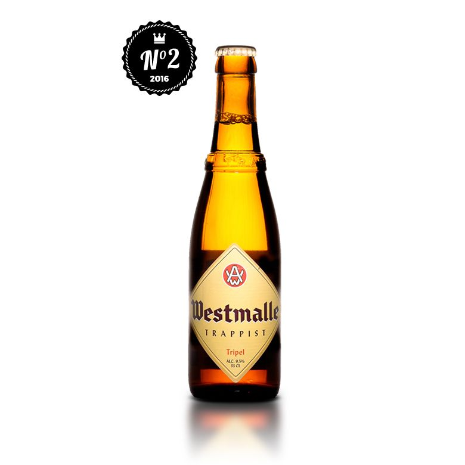
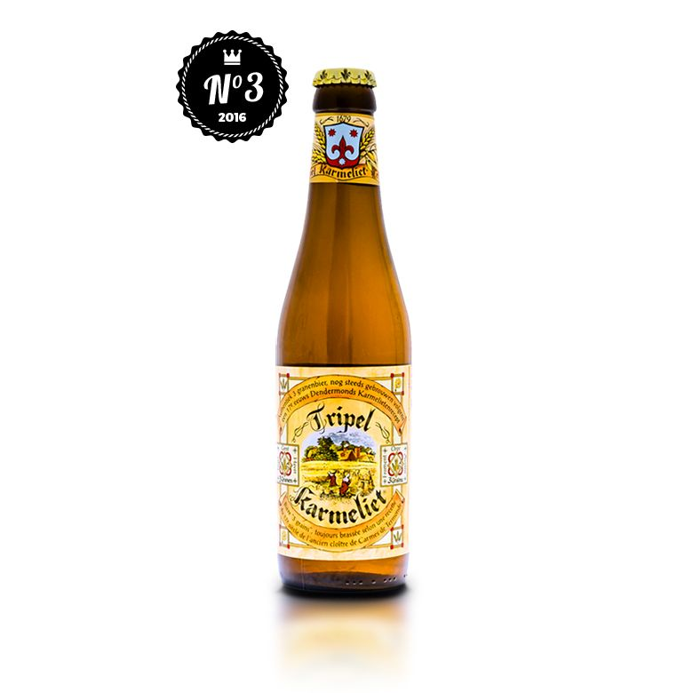

|  |
Chimay bleueLa Chimay Blue a été élue meilleure bière belge par RateBeer, avec une note maximale de 100 sur 100. Cette bière trappiste (bière brassée par ou sous contrôle des moines trappistes) à 9% vol. semble avoir atteint la perfection, du moins selon l’avis des experts. Notre cher Manu, bièrologue chez 1PM de son état, est raccord avec ce avis, alors que nos abonnés lui confèrent une note de 3,8/5. |
|  |
Westmalle TripelAvec une note de 99/100, la Westmalle Tripel se partage la deuxième place du podium avec la Triple Karmeliet et la Gouden Carolus. Aussi appelée « Mère de toutes les triples », la Westmalle est aussi une bière de trappiste à tout de même 9,5% vol. Parfumée avec de notes d’agrumes, elle est bien levurée et amère. Manu kiffe la Westmalle, à croire qu’il est de mèche avec RateBeer, alors que nos abonnées lui ont donné une note de 3,6/5. |
|  |
Triple KarmelietEncore une triple en deuxième position avec la Triple Karmelite. Moins forte que la précédente, elle arbore un taux d’alcool à 8,4%vol., honorant son titre de triple. Sa particularité ? Une mousse impressionnante et crémeuse et la même recette depuis 1679. Véritable coup de coeur de notre communauté, elle recueille une note de 4,2/5. Si nous devions faire un classement Une Petite Mousse, elle remporterait, haut la main, la palme de la meilleure bière belge ! |